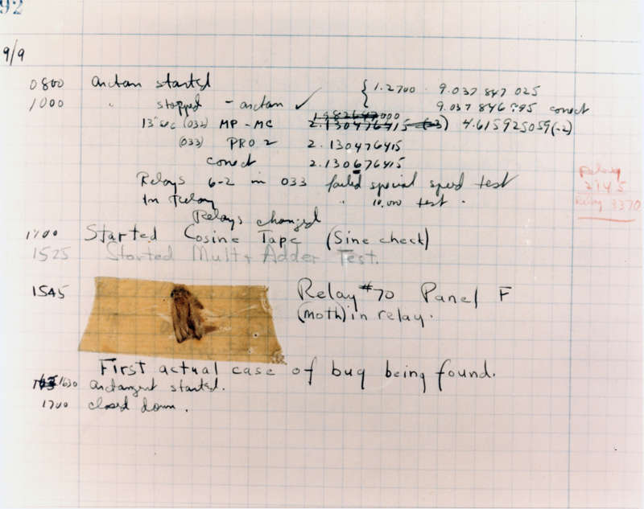
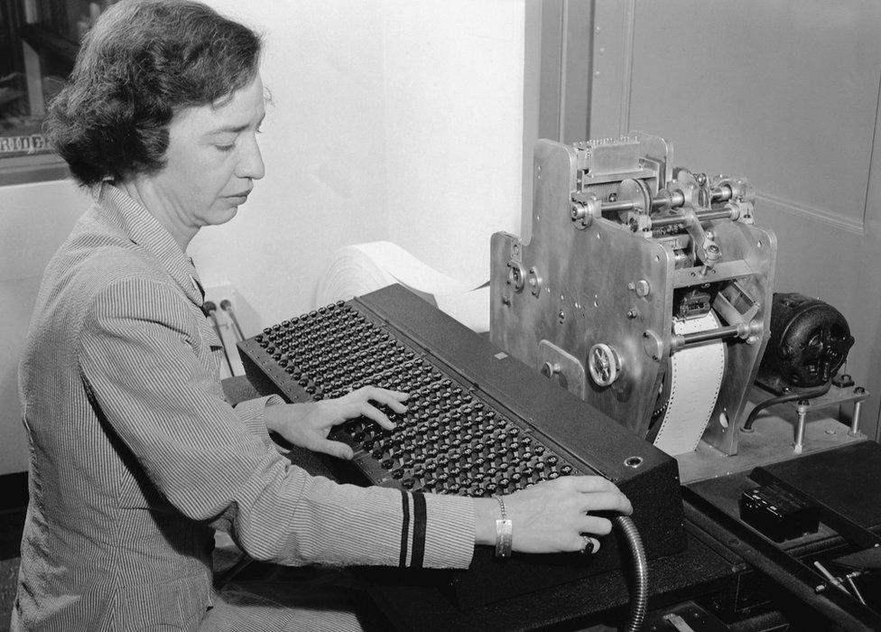
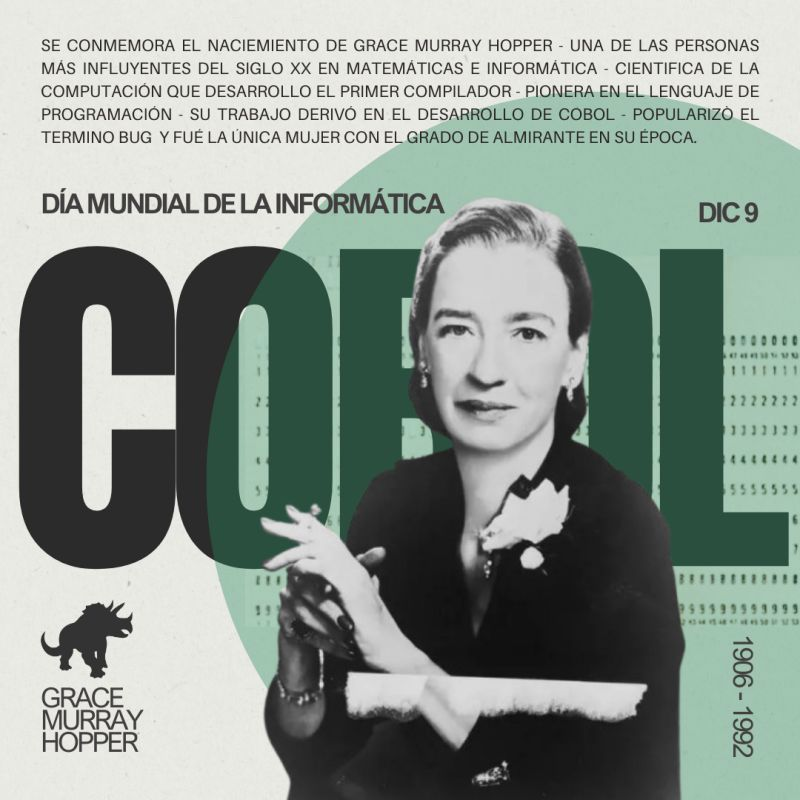

El famoso BUG
Grace Brewster Murray, mostró desde pequeña una gran aptitud para las ciencias y las matemáticas que vino, en parte, influenciada por la tradición militar y científica de toda su familia. Con el apoyo de sus padres y su abuelo, quieres creían en una educación igualitaria para hombres y mujeres,Grace se sumergió por completo en el mundo de la tecnología, llegando incluso a desarmar los relojes de su casa a los 7 años para comprender su funcionamiento.
Este interés llegó a uno de sus clímax cuando cumplió los 18, momento en el que comenzó a cursar la carrera de Matemáticas en Yale. Sin embargo, nunca llegó a ejercer como tal ya que, con la llegada de la Segunda Guerra Mundial, Grace decidió unirse a las fuerzas armadas y fue enviada a la Universidad de Harvard para completar sus estudios en las disciplinas de ingeniería y física aplicada. Allí, bajo la tutela de Howard H. Aiken, comenzó su revolucionaria carrera en computación en 1944, convirtiéndose al poco tiempo en la primera mujer y la primera tercera persona en programar el ordenador Mark I.
No solo fue la pionera en la programación de esta computadora, sino que gracias a la resolución de un fallo técnico en ella acuñó el término “bug”, usado aun a día de hoy para describir un fallo técnico informático. Originalmente, Grace descubrió que el repentino mal funcionamiento del ordenador derivaba de la existencia de una pequeña mariposa (“bug” se traduce como chinche o bicho en inglés) dentro de los circuitos que producía errores de ejecución.
Primer traductor de programación

Con la finalización de la guerra, Grace continuó su trabajo en Harvard, desarrollando aplicaciones contables para la Mark I, llevando en 1949 su experiencia a Eckert-Mauchly Corporation, en Filadelfia, donde contribuyó al desarrollo del UNIVAC I, combinando este puesto con el de directora de desarrollo de programación automática. El UNIVAC I, lanzado al mercado en 1950, fue reconocido como el primer gran ordenador y superó en eficiencia al Mark I en el procesamiento de información.
Con este hito, Grace se embarcó en una de las grandes hazañas del momento en cuestión de programación: conseguir desarrollar un lenguaje de programación que utilizase como base palabras en inglés, tal y como si se tratase de una traducción de los lenguajes más técnicos. Afirmó que era más fácil, para la mayoría de las personas, escribir en inglés que utilizar símbolos, por lo que propuso que los programadores pudieran escribir programas en inglés y fuese la propia computadora la encargada de “traducirlos” al lenguaje de la máquina.
Aunque esta propuesta fue inicialmente rechazada durante 3 años, en 1952, Grace Hopper (ya con su apellido de casada) escribió un documento sobre los compiladores y desarrolló el suyo propio: el compilador A.Este esfuerzo pionero y un tanto rudimentario culminó en las primeras etapas del COBOL, el lenguaje de programación para procesadores de datos y, actualmente, uno de los más utilizados en este tipo de tareas.
EL COBOL
Tan solo dos años después de su iniciativa, inicialmente carente de seguidores, la propuesta tomó fuerza y se formó el comité que diseñaría el innovador lenguaje de programación. Y, aunque Grace no desempeñó un papel central en el desarrollo de COBOL, sí fue miembro del comité original y su trabajo influyó significativamente en el diseño final, siendo reconocida finalmente como la creadora.
COBOL marcó un antes y un después en la informática y la programación. Fue el primer lenguaje que ofrecía una interfaz proporcional a los recursos disponibles en el ordenador, permitiendo que los programadores no necesitaran conocer los detalles específicos y técnicos de la máquina. Además, los programas desarrollados para una plataforma determinada podían ejecutarse en otro ordenador completamente diferente sin necesidad de realizar ningún tipo de modificaciones.
En otras palabras, la aportación de Grace Hopper a la informática y al avance de la tecnología la hizo digna del apodo con el que pasó a la historia: “Amazing Grace”.